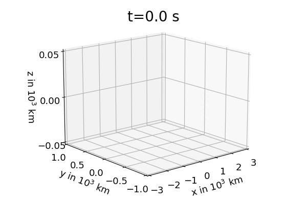

Verlet Algorithm
The most common example of a two body problem is the well known Kepler problem that can be described with:
$$\vec{F}_1=m_1\ddot{\vec{r}}_1=-G\dfrac{m_1 m_2}{|\vec{r}_1-\vec{r}_2|^3}(\vec{r}_1-\vec{r}_2),\:\:\:\:\:\:\vec{F}_2=m_2\ddot{\vec{r}}_2=-G\dfrac{m_1 m_2}{|\vec{r}_1-\vec{r}_2|^3}(\vec{r}_2-\vec{r}_1)$$
The coupled vector equations above can also be written as a system of 12 ordinary differential equations:
$$\dot{x}_1=v_{x,1},\:\:\:\:\:\:\dot{y}_1=v_{y,1},\:\:\:\:\:\:\dot{z}_1=v_{z,1},\:\:\:\:\:\:\dot{v}_{x,1}=\vec{F}_{1,x},\:\:\:\:\:\:\dot{v}_{y,1}=\vec{F}_{1,y},\:\:\:\:\:\:\dot{v}_{z,1}=\vec{F}_{1,z}$$
$$\dot{x}_2=v_{x,2},\:\:\:\:\:\:\dot{y}_2=v_{y,2},\:\:\:\:\:\:\dot{z}_2=v_{z,2},\:\:\:\:\:\:\dot{v}_{x,2}=\vec{F}_{2,x},\:\:\:\:\:\:\dot{v}_{y,2}=\vec{F}_{2,y},\:\:\:\:\:\:\dot{v}_{z,2}=\vec{F}_{2,z}$$
With initial conditions:
$$\vec{r}_1(0)=\vec{r}_{1,0},\:\:\:\:\:\:\vec{r}_2(0)=\vec{r}_{2,0},\:\:\:\:\:\:\dot{\vec{r}}_1(0)=\vec{v}_{1,0},\:\:\:\:\:\:\dot{\vec{r}}_2(0)=\vec{v}_{2,0}$$
These equations can be solved numerical via the Verlet algorithm:
$$\vec{r}_{1,n+1}=\vec{r}_{1,n}+\vec{v}_{1,n}\Delta t+\frac{1}{2m_1}\vec{F}_{1,n}(\Delta t)^2,\:\:\:\:\:\vec{v}_{1,n+1}=\vec{v}_{1,n}+\frac{1}{2m_1}(\vec{F}_{1,n}+\vec{F}_{1,n+1})\Delta t$$
$$\vec{r}_{2,n+1}=\vec{r}_{2,n}+\vec{v}_{2,n}\Delta t+\frac{1}{2m_2}\vec{F}_{2,n}(\Delta t)^2,\:\:\:\:\:\vec{v}_{2,n+1}=\vec{v}_{2,n}+\frac{1}{2m_2}(\vec{F}_{2,n}+\vec{F}_{2,n+1})\Delta t$$
The center of mass is defined by:
$$\vec{R}=\frac{m_1}{M}\vec{r}_1+\frac{m_2}{M}\vec{r}_2,\:\:\:\vec{r}=\vec{r}_1-\vec{r}_2,\:\:\:\:M=m_1+m_2,\:\:\:\:\Rightarrow\:\:\:\:\vec{r}_1=\vec{R}+\dfrac{m_2}{M}\vec{r},\:\:\:\vec{r}_2=\vec{R}-\dfrac{m_1}{M}\vec{r}$$
Due to Newtons third law the center of mass motion is described by a constant velocity and therefore a linear motion:
$$m_1\ddot{\vec{r}}_1=-m_2\ddot{\vec{r}}_2\:\:\:\Rightarrow\:\:\:\ddot{\vec{R}}=0\:\:\:\Rightarrow\:\:\:\vec{R}=\vec{V}t+\vec{R}_0$$


Figure 1: shows the solution of the two body problem with initial conditions \(\vec{r}_{1,0}=(3000,0,0)^T\) km \(\vec{v}_{1,0}=(-7.5,15,1)^T\) km/s, \(\vec{r}_{2,0}=(-3000,0,0)^T\) km \(\vec{v}_{2,0}=(7.5,-15,1)^T\) km/s and \(m_1=m_2=2\cdot 10^{26}\) kg. Left hand side: trajectories of \(\vec{r}_2\) (blue), \(\vec{r}_1\) (pink) and center of mass \(\vec{R}\) (black). Right hand side: trajectories of \(\vec{r}_2-\vec{R}\) (blue) and \(\vec{r}_1-\vec{R}\) (pink). If one neglects the center of mass motion part for the two masses one finds the planar elliptic motion that is well known from astronomy. It is worth mentioning that this plane motion is perpendicular to \(\vec{L}=m_1m_2/M\:\vec{r}\times\vec{v}\). For the initial conditions above one finds that \(\vec{L}\) is parallel to the z coordinate direction.
References
[1] https://en.wikipedia.org/wiki/Verlet_integration
[2] https://en.wikipedia.org/wiki/Two-body_problem
[1] https://en.wikipedia.org/wiki/Verlet_integration
[2] https://en.wikipedia.org/wiki/Two-body_problem
"""
The code below was written by @author: https://github.com/DianaNtz and is an
implementation of the Verlet algorithm. It solves in particular the Kepler problem.
For more details on the code requirements and licences see
https://github.com/DianaNtz/Verlet-Algorithm.
"""
import numpy as np
import matplotlib.pyplot as plt
import mpl_toolkits.mplot3d.axes3d as p3
import os
import imageio
filenames = []
#some initial values
t0=0
tfinal=250 #equal masses in s
#tfinal=146 #unequal masses in s
dt=0.002#in s
m1=2*10**(26) #7*10**(25) #in kg
m2=2*10**(26) #in kg
G=6.67259*10**-11 #gravitational constant in m^3/(kg s^2)
steps=int((tfinal-t0)/dt)
t=np.empty(steps+1, dtype='double')
tn=t0
def fx1(x1,y1,z1,x2,y2,z2):
return -m2*G*(x1-x2)*1/np.sqrt((x1-x2)**2+(y1-y2)**2+(z1-z2)**2)**3
def fy1(x1,y1,z1,x2,y2,z2):
return -m2*G*(y1-y2)*1/np.sqrt((x1-x2)**2+(y1-y2)**2+(z1-z2)**2)**3
def fz1(x1,y1,z1,x2,y2,z2):
return -m2*G*(z1-z2)*1/np.sqrt((x1-x2)**2+(y1-y2)**2+(z1-z2)**2)**3
def fx2(x1,y1,z1,x2,y2,z2):
return m1*G*(x1-x2)*1/np.sqrt((x1-x2)**2+(y1-y2)**2+(z1-z2)**2)**3
def fy2(x1,y1,z1,x2,y2,z2):
return m1*G*(y1-y2)*1/np.sqrt((x1-x2)**2+(y1-y2)**2+(z1-z2)**2)**3
def fz2(x1,y1,z1,x2,y2,z2):
return m1*G*(z1-z2)*1/np.sqrt((x1-x2)**2+(y1-y2)**2+(z1-z2)**2)**3
x1=np.empty(steps+1, dtype='double')
y1=np.empty(steps+1, dtype='double')
z1=np.empty(steps+1, dtype='double')
x2=np.empty(steps+1, dtype='double')
y2=np.empty(steps+1, dtype='double')
z2=np.empty(steps+1, dtype='double')
#center of mass
Rx=np.empty(steps+1, dtype='double')
Ry=np.empty(steps+1, dtype='double')
Rz=np.empty(steps+1, dtype='double')
#initial position of first mass in m
x10=3000*1000
y10=0
z10=0
#initial velocity of first mass in m/s
vx10=-7.5*1000
vy10=-vx10*2
vz10=1000
#initial position of second mass in m
x20=-x10*m1/m2
y20=-y10*m1/m2
z20=-z10*m1/m2
#initial velocity of second mass in m/s
vx20=-vx10*m1/m2
vy20=-vy10*m1/m2
vz20=1000
x1n=x10
y1n=y10
z1n=z10
vx1n=vx10
vy1n=vy10
vz1n=vz10
x2n=x20
y2n=y20
z2n=z20
vx2n=vx20
vy2n=vy20
vz2n=vz20
#starting loop for time iteration
for i in range(0,steps+1):
x1[i]=x1n
y1[i]=y1n
z1[i]=z1n
x2[i]=x2n
y2[i]=y2n
z2[i]=z2n
Rx[i]=(m1*x1[i]+m2*x2[i])/(m1+m2)
Ry[i]=(m1*y1[i]+m2*y2[i])/(m1+m2)
Rz[i]=(m1*z1[i]+m2*z2[i])/(m1+m2)
#Verlet algorithm
x1n=x1n+dt*vx1n+0.5*fx1(x1[i],y1[i],z1[i],x2[i],y2[i],z2[i])*dt**2
y1n=y1n+dt*vy1n+0.5*fy1(x1[i],y1[i],z1[i],x2[i],y2[i],z2[i])*dt**2
z1n=z1n+dt*vz1n+0.5*fz1(x1[i],y1[i],z1[i],x2[i],y2[i],z2[i])*dt**2
x2n=x2n+dt*vx2n+0.5*fx2(x1[i],y1[i],z1[i],x2[i],y2[i],z2[i])*dt**2
y2n=y2n+dt*vy2n+0.5*fy2(x1[i],y1[i],z1[i],x2[i],y2[i],z2[i])*dt**2
z2n=z2n+dt*vz2n+0.5*fz2(x1[i],y1[i],z1[i],x2[i],y2[i],z2[i])*dt**2
vx1n=vx1n+dt*0.5*(fx1(x1[i],y1[i],z1[i],x2[i],y2[i],z2[i])
+fx1(x1n,y1n,z1n,x2n,y2n,z2n))
vy1n=vy1n+dt*0.5*(fy1(x1[i],y1[i],z1[i],x2[i],y2[i],z2[i])
+fy1(x1n,y1n,z1n,x2n,y2n,z2n))
vz1n=vz1n+dt*0.5*(fz1(x1[i],y1[i],z1[i],x2[i],y2[i],z2[i])
+fz1(x1n,y1n,z1n,x2n,y2n,z2n))
vx2n=vx2n+dt*0.5*(fx2(x1[i],y1[i],z1[i],x2[i],y2[i],z2[i])
+fx2(x1n,y1n,z1n,x2n,y2n,z2n))
vy2n=vy2n+dt*0.5*(fy2(x1[i],y1[i],z1[i],x2[i],y2[i],z2[i])
+fy2(x1n,y1n,z1n,x2n,y2n,z2n))
vz2n=vz2n+dt*0.5*(fz2(x1[i],y1[i],z1[i],x2[i],y2[i],z2[i])
+fz2(x1n,y1n,z1n,x2n,y2n,z2n))
t[i]=tn
tn=tn+dt
if(i%1000==0):
fig = plt.figure()
ax = p3.Axes3D(fig)
#ax.plot(x2[:i]*10**(-6), y2[:i]*10**(-6),z2[:i]*10**(-6),
#color='skyblue',linewidth=2)
#ax.plot(x1[:i]*10**(-6), y1[:i]*10**(-6),z1[:i]*10**(-6),
#color='deeppink',linestyle='-.',linewidth=2)
#ax.plot(Rx[:i]*10**(-6), Ry[:i]*10**(-6),Rz[:i]*10**(-6),
#color='black',linestyle='-',linewidth=2)
ax.plot(x2[:i]*10**(-6)-Rx[:i]*10**(-6), y2[:i]*10**(-6)-Ry[:i]*10**(-6),
z2[:i]*10**(-6)-Rz[:i]*10**(-6),color='skyblue',linewidth=2)
ax.plot(x1[:i]*10**(-6)-Rx[:i]*10**(-6), y1[:i]*10**(-6)-Ry[:i]*10**(-6),
z1[:i]*10**(-6)-Rz[:i]*10**(-6),color='deeppink',linestyle='-.',linewidth=2)
#ax.set_zlim(0,0.25) #with center of mass
ax.set_zlim(-0.05,0,0.05) #without center of mass
ax.set_ylim(-1,1)
ax.set_xlim(-3.0,3.0)
ax.set_xlabel("x in $10^3$ km",fontsize= 13,labelpad=7)
ax.set_ylabel("y in $10^3$ km",fontsize= 13,labelpad=7)
ax.set_zlabel("z in $10^3$ km",fontsize= 13,labelpad=7)
ax.zaxis.set_tick_params(labelsize=13)
ax.yaxis.set_tick_params(labelsize=13)
ax.xaxis.set_tick_params(labelsize=13)
stringtitle="t=".__add__(str(round(t[i],1))).__add__(" s")
plt.title(stringtitle,fontsize=20,x=0.5, y=0.95)
ax.set_xticks([-3,-2,-1,0,1,2,3])
ax.set_yticks([-1,-0.5,0,0.5,1])
#ax.set_zticks([0,0.05,0.1,0.15,0.2,0.25]) #with center of mass
ax.set_zticks([-0.05,0,0.05]) #without center of mass
ax.view_init(15, 230)
filename ='bla{0:.0f}.png'.format(i/1000)
filenames.append(filename)
plt.savefig(filename,dpi=100)
plt.close()
with imageio.get_writer('kepler2.gif', mode='I') as writer:
for filename in filenames:
image = imageio.imread(filename)
writer.append_data(image)
for filename in set(filenames):
os.remove(filename)